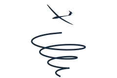
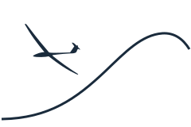
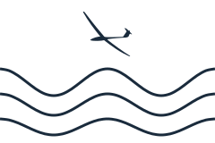

Termické létání
Slunce ohřeje zem a od ní stoupají bubliny teplého vzduchu. Kluzák v nich krouží, nabírá výšku a tu pak promění v kilometry přeletu.
Termika, svah a vlna. Jak kluzák létá bez motoru a kde se u nás létá.
Bezmotorové létání neboli plachtění je letecký sport, při kterém kluzák bez motoru zůstává ve vzduchu díky energii atmosféry: stoupajícímu teplému vzduchu, větru u kopců a vlnám za horami. Pro mnoho pilotů je vstupní branou do letectví. Někteří ho berou jen jako první krok, udělají výcvik a přesednou do motorových letadel. Kdo u plachtění zůstane, ale zjistí, že teprve začíná: přelety na stovky kilometrů, létání ve vlně nebo soutěže z něj dělají plnohodnotnou a náročnou disciplínu.
Česko je pro plachtění zajímavé tím, že tu můžeme zažít všechny tři hlavní způsoby létání: termiku, svah i vlnu. Tento web vysvětluje, jak fungují, kde se u nás létají a jak se k plachtění dostat. Je určen těm, kdo o něm zatím nic nevědí, i těm, kdo o létání sami uvažují.
Jmenuji se Štěpán Bartoš a na kluzácích létám osm let. Začínal jsem v Aeroklubu Kolín, ale rád létám i z jiných letišť. Na kluzácích také závodím a reprezentuji Českou republiku. Web píšu proto, že o plachtění ví málokdo, a přitom je to jeden z nejkrásnějších způsobů, jak létat.

Slunce ohřeje zem a od ní stoupají bubliny teplého vzduchu. Kluzák v nich krouží, nabírá výšku a tu pak promění v kilometry přeletu.

Vítr, který narazí na svah, je odkloněn vzhůru. Kluzák létá podél hřebene na návětrné straně a drží se v pásu stoupajícího vzduchu, nízko nad terénem.

Silný vítr přes hory rozkmitá vzduch v jejich závětří do obrovských stojatých vln. V nich se kluzák dostane mnohem výš než v termice, až do výšky několika kilometrů.
Ze vzduchu i ze země.